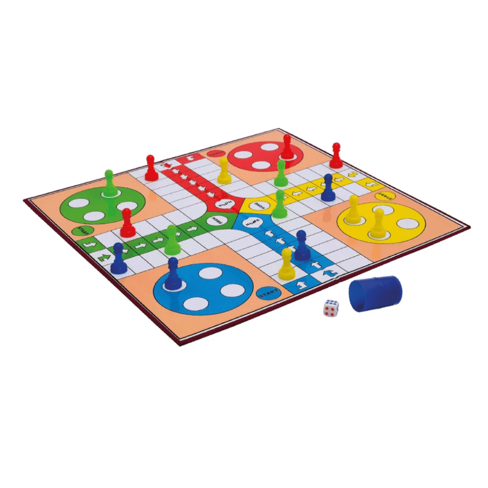

El ajedrez es un popular juego de mesa de tradición ancestral, cuya práctica frecuente y deportiva en Occidente data del siglo XV. El juego simula sobre un tablero cuadriculado el enfrentamiento entre dos ejércitos antiguos y asigna a cada jugador uno de los bandos, con el propósito de vencer al contrario y atrapar a su rey.

El ludo es un juego de mesa. Se trata de un entretenimiento que se basa en el uso de un tablero con casillas numeradas y cuatro salidas: cada participante dispone de cuatro fichas que debe tratar de llevar a la casilla central, avanzando de acuerdo a lo que determina un dado.